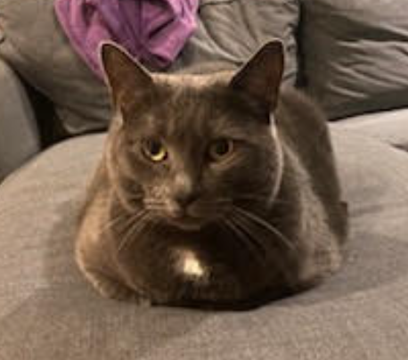

Cat Site is a personal project undertaken by a ninth grade student during his "Design Coding" class. The website is part of his final project in this class, which involves making a website using HTML and CSS about a student's passion to be published on GitHub.
This project stemmed from my passion for cats, specifically house cats, which further originates in my cats, as I have had at least one pet cat for most of my life. Currently, I have two cats, named Munchkin and Ninja. You can learn more about these cats in the My Cats section.

Munchkin
On Cat Site, you can find several topics including facts about cats, pictures of my cats, and forums to discuss cats. Did you know that some cats like cantaloupe as the amino acids found in it smell the same as those found in meat?
Last Updated: May 5, 2026